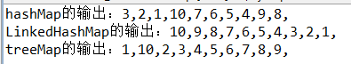

java.util.Map;它有四个实现类,分别是HashMap Hashtable LinkedHashMap 和TreeMap.
HashMap是一个最常用的Map，它根据键的hashCode值存储数据，根据键可以直接获取它的值，具有很快的访问速度。HashMap最多只允许一条记录的键为NULL，允许多条记录的值为NULL。HashMap不支持线程同步，即任一时刻可以有多个线程同时写HashMap，可能会导致数据的不一致性。如果需要同步，可以用Collections的synchronizedMap方法使HashMap具有同步的能力。
Hashtable与HashMap类似，不同的是：它不允许记录的键或者值为空；它支持线程的同步，即任一时刻只有一个线程能写Hashtable，因此也导致了Hashtable在写入时会比较慢。
LinkedHashMap保存了记录的插入顺序，在用Iterator遍历LinkedHashMap时，先得到的记录肯定是先插入的。
TreeMap在遍历的时候会比HashMap慢TreeMap能够把它保存的记录根据键排序，默认是按升序排序，也可以指定排序的比较器。当用Iterator遍历TreeMap时，得到的记录是排过序的。
public class Hash_Tree_LinkedHashMap {
@Test
public void testMap(){
Map<String, String> hashMap = new HashMap<String, String>();
Map<String, String> linkedHashMap = new LinkedHashMap<String, String>();
Map<String,String> treeMap = new TreeMap<String, String>();
for ( int i = 10; i > 0; i--) {
hashMap.put( "" + i, "" + i);
linkedHashMap.put( "" + i, "" + i);
treeMap.put( "" + i, "" + i);
}
System. out.print( "hashMap的输出：" );
for (Entry<String, String> map : hashMap.entrySet()) {
System. out.print(map.getKey()+ ",");
}
System. out.println();
System. out.print( "LinkedHashMap的输出：" );
for (Entry<String, String> map : linkedHashMap.entrySet()) {
System. out.print(map.getKey()+ ",");
}
System. out.println();
System. out.print( "treeMap的输出：" );
for (Entry<String, String> map : treeMap.entrySet()) {
System. out.print(map.getKey()+ ",");
}
}
}
输出为：
